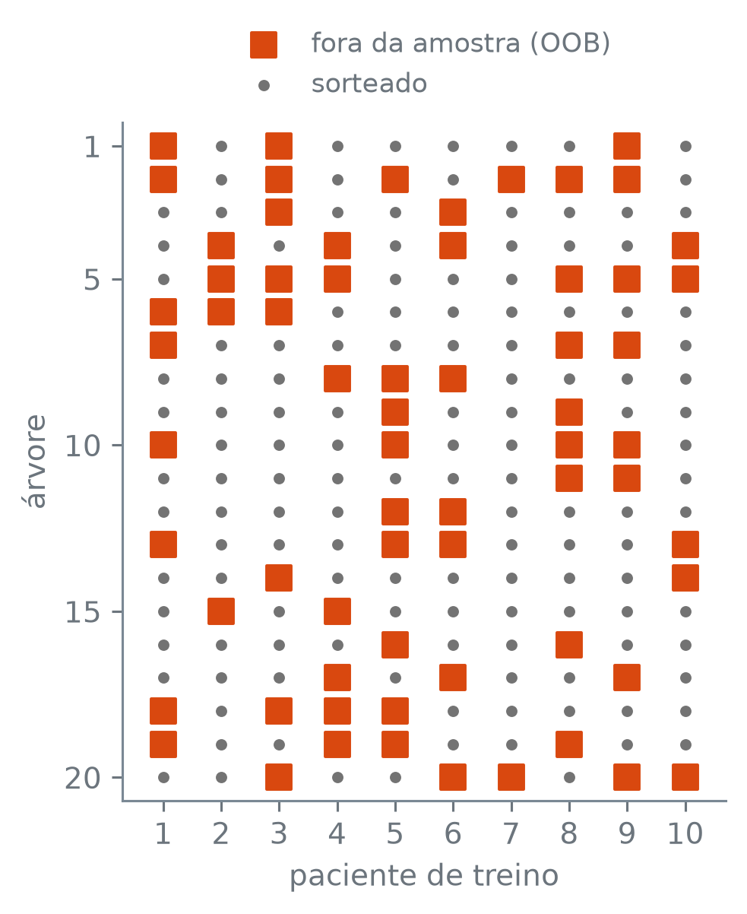
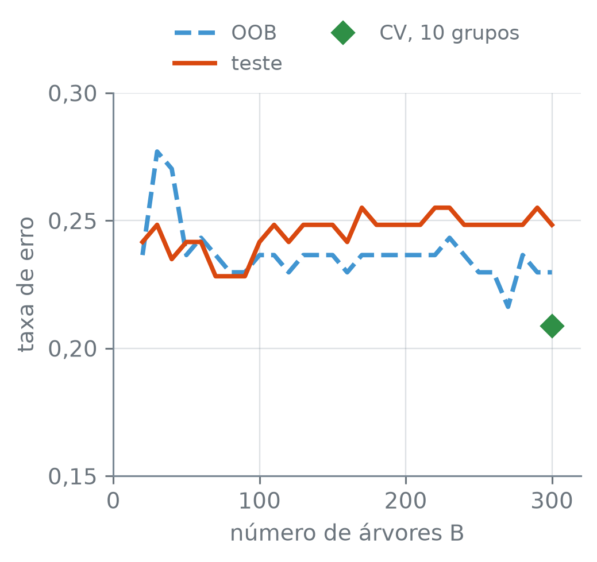
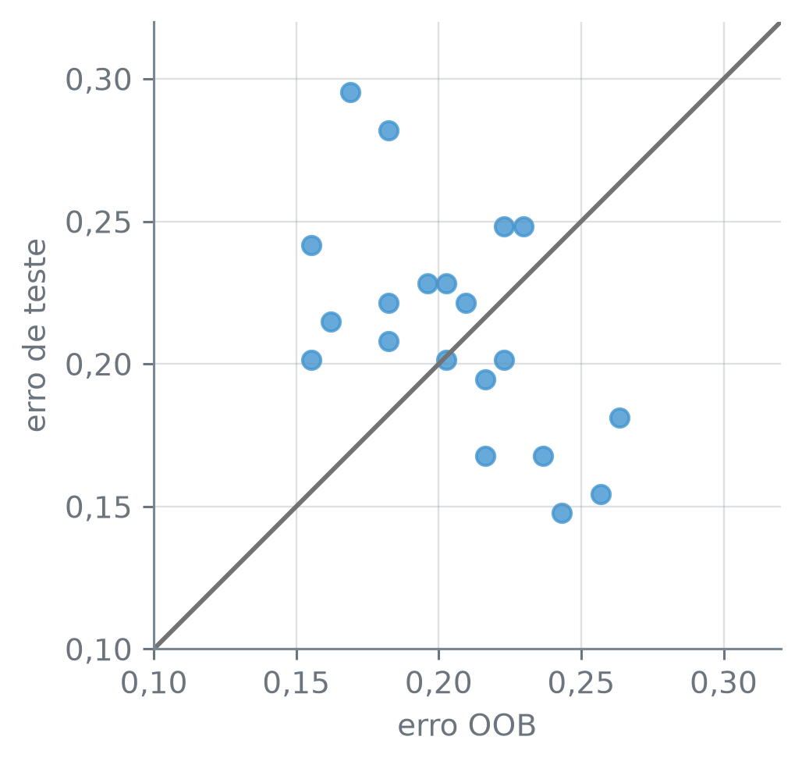

numero_br = lambda valor, casas=2: (
f"{valor:,.{casas}f}".replace(",", "_").replace(".", ",").replace("_", ".")
.replace("-", "−")
)Erro Out-of-Bag
Nota
Esta seção corresponde à seção 8.2.1 de James et al. (2023).
Cada árvore do bagging sai de uma amostra bootstrap e não vê pouco mais de um terço das observações de treino. Para uma observação que uma árvore não viu, a previsão dessa árvore vale tanto quanto a previsão para uma observação nova. Juntando, para cada observação, só as previsões das árvores que não a viram, dá para estimar o erro de teste sem separar um conjunto de validação e sem ajustar o modelo dez vezes?
A função numero_br escreve os números com a pontuação brasileira:
Os pacientes
O conjunto Heart tem medidas de pacientes que chegaram a um hospital com dor no peito, como a idade, o colesterol e o resultado de um exame com tálio, e a resposta doenca_cardiaca, “sim” ou “não”, dada pela angiografia. As duas colunas de texto, dor_no_peito e talio, viram indicadoras de todas as categorias, porque cada indicadora é uma pergunta que a árvore pode fazer. Metade dos pacientes fica para o teste, sorteada com a semente 13 e com a mesma proporção de doentes nas duas metades:
coracao = pd.read_csv("dados/Heart.csv").dropna()
y_c = coracao["doenca_cardiaca"]
X_c = pd.get_dummies(coracao.drop(columns="doenca_cardiaca"),
dtype=float)
treino_Xc, teste_Xc, treino_yc, teste_yc = train_test_split(
X_c, y_c, test_size=0.5, random_state=13, stratify=y_c)
print("pacientes:", len(coracao))
print("medidas:", coracao.shape[1] - 1, " colunas:", X_c.shape[1])
print("treino:", len(treino_Xc), " teste:", len(teste_Xc))
print("erro do 'sempre não':",
numero_br((teste_yc == "sim").mean(), 4))pacientes: 297
medidas: 13 colunas: 18
treino: 148 teste: 149
erro do 'sempre não': 0,4631train_test_split(X, y, test_size, random_state, stratify) — com test_size=0.5, metade das linhas vai para o teste; stratify=y_c sorteia de modo que a proporção de cada classe de y_c seja quase a mesma no treino e no teste. serie == "sim" — uma série de True e False; a média dela é a fração de True.
Dos 297 pacientes com todas as medidas, 148 ficam no treino e 149 no teste. As 13 medidas viram 18 colunas depois das indicadoras. Um classificador que respondesse “não” para todo paciente, sem olhar medida nenhuma, erraria no teste uma fração de 0,4631. Um erro de classificação a mais ou a menos no teste muda a taxa em 1/149, e no treino, em 1/148.
As árvores que não viram cada paciente
O bagging de árvores de classificação é o RandomForestClassifier com max_features=None: toda divisão de toda árvore pode usar qualquer uma das 18 colunas. Cada árvore sai de uma amostra bootstrap própria, e o chunk ajusta 300 delas e marca, a partir dos pacientes que cada amostra sorteou, quais ficaram de fora de cada árvore:
bagging = RandomForestClassifier(n_estimators=300, max_features=None,
oob_score=True, random_state=13)
bagging.fit(treino_Xc, treino_yc)
fora = np.ones((300, len(treino_Xc)), dtype=bool)
for b, sorteados in enumerate(bagging.estimators_samples_):
fora[b, sorteados] = False
print("fração fora, média:", numero_br(fora.mean(), 4))
por_paciente = fora.sum(axis=0)
print("árvores que não viram o paciente:")
print(" mínimo", por_paciente.min(),
" mediana", int(np.median(por_paciente)),
" máximo", por_paciente.max())
print("todos têm árvores:", bool((por_paciente > 0).all()))
print("(1 − 1/148)^148:", numero_br((1 - 1 / 148) ** 148, 4))
print("1/e:", numero_br(np.exp(-1), 4))fração fora, média: 0,3676
árvores que não viram o paciente:
mínimo 92 mediana 110 máximo 133
todos têm árvores: True
(1 − 1/148)^148: 0,3666
1/e: 0,3679RandomForestClassifier(n_estimators, max_features, oob_score, random_state) — ajusta n_estimators árvores de classificação sem limite de profundidade, cada uma numa amostra bootstrap do treino. max_features=None deixa toda divisão escolher entre todas as colunas, e aí o modelo é o bagging; o padrão, "sqrt", dá a floresta aleatória da seção 13.3. oob_score=True calcula, no próprio ajuste, o acerto out-of-bag definido logo abaixo. random_state fixa os sorteios.
modelo.estimators_samples_ — para cada árvore, as posições das linhas de treino que a amostra bootstrap sorteou, com repetição. np.ones((linhas, colunas), dtype=bool) — uma matriz toda True; aqui, uma linha por árvore e uma coluna por paciente, e as posições sorteadas viram False. np.median(v) — a mediana.
Em média, cada árvore deixou de fora uma fração de 0,3676 dos 148 pacientes. É o que o sorteio prevê: um paciente fica fora de uma amostra quando nenhum dos 148 sorteios o escolhe, o que acontece com chance \((1 - 1/148)^{148} = 0{,}3666\), e essa chance tende a \(1/e = 0{,}3679\) quando o número de pacientes cresce. É pouco mais de um terço. Visto do lado do paciente, a conta é a mesma: das 300 árvores, cerca de 300 × 0,3666 = 110 não o viram. A mediana é 110, e mesmo o paciente com menos árvores tem 92. Todo paciente tem árvores que não o viram.
A matriz fora tem 300 linhas e 148 colunas. Um canto dela, as 20 primeiras árvores e os 10 primeiros pacientes do treino, mostra como as árvores que não viram cada paciente se espalham:
canto = fora[:20, :10]
arvores, pacientes = np.nonzero(canto)
dentro_a, dentro_p = np.nonzero(~canto)
fig, ax = plt.subplots(figsize=(3.6, 4.4))
ax.scatter(pacientes + 1, arvores + 1, marker="s", s=70, color="C1",
label="fora da amostra (OOB)")
ax.scatter(dentro_p + 1, dentro_a + 1, s=8, color="0.45",
label="sorteado")
ax.set_xlim(0.3, 10.7)
ax.set_ylim(20.7, 0.3)
ax.set_xticks(range(1, 11))
ax.set_yticks([1, 5, 10, 15, 20])
ax.grid(False)
ax.set_xlabel("paciente de treino")
ax.set_ylabel("árvore")
ax.legend(loc="lower center", bbox_to_anchor=(0.5, 1.0), ncol=1)
plt.tight_layout()
plt.show()
np.nonzero(m) — as posições dos True de uma matriz, como dois arrays: as linhas e as colunas. ~m — troca True por False e vice-versa. marker="s", no ax.scatter — cada ponto é um quadrado. ax.grid(False) — tira a malha do fundo.
Os pacientes que ficaram fora da amostra bootstrap de uma árvore são as observações out-of-bag (OOB, “fora da sacola”) daquela árvore. A previsão OOB do paciente \(i\) junta só as árvores em que \(i\) foi OOB, cerca de \(B/3\) delas (a fração tende a \(1/e \approx 0{,}37\)): a média das previsões, em regressão, ou o voto majoritário, em classificação. O erro OOB compara a previsão OOB de cada paciente de treino com a resposta dele: o MSE, em regressão, ou a taxa de erro de classificação. Nenhuma das árvores usadas para prever \(i\) viu \(i\), e por isso o erro OOB estima o erro de teste do bagging.
O scikit-learn decide pela média das probabilidades que as árvores dão a cada classe e fica com a classe de maior média. Uma árvore crescida até o fim tem folhas puras, só de doentes ou só de não doentes, e dá probabilidade 0 ou 1 a cada classe, isto é, um voto; a média das probabilidades de “sim” é a fração de árvores que votam “sim”. Para o primeiro paciente do treino, a primeira coluna da figura, o ajuste guardou essa fração em oob_decision_function_, calculada só com as árvores que não o viram:
oob = bagging.oob_decision_function_
print("classes:", list(bagging.classes_))
print("árvores que não o viram:", por_paciente[0])
print("fração que vota 'sim':", numero_br(oob[0, 1], 2))
print("votos 'sim':", round(oob[0, 1] * por_paciente[0]))
print("previsão OOB:", bagging.classes_[oob[0].argmax()])
print("resposta:", treino_yc.iloc[0])classes: ['não', 'sim']
árvores que não o viram: 100
fração que vota 'sim': 0,96
votos 'sim': 96
previsão OOB: sim
resposta: simmodelo.oob_decision_function_ — a média OOB das probabilidades de cada classe, um paciente de treino por linha e uma coluna por classe, na ordem de modelo.classes_ (“não”, “sim”); [0, 1] é a fração de “sim” do primeiro paciente. v.argmax() — a posição do maior valor; num empate, a primeira.
Das 100 árvores que não viram o primeiro paciente, 96 votam “sim”, e a previsão OOB dele é “sim”, que é também a resposta da angiografia. Esse paciente conta como acerto no erro OOB. Se o número de árvores que não viram um paciente for par, ele pode ter tantos votos “sim” quanto “não”; aí o argmax fica com a primeira classe, “não”. O erro OOB faz essa conta para os 148 pacientes:
erro_oob = 1 - bagging.oob_score_
print("erro OOB:", numero_br(erro_oob, 4))
print("entre 0,21 e 0,24:", 0.21 <= erro_oob <= 0.24)erro OOB: 0,2297
entre 0,21 e 0,24: Truemodelo.oob_score_ — o acerto OOB de um classificador, a fração de pacientes de treino cuja previsão OOB acerta; o erro é 1 − oob_score_. Num regressor, como o RandomForestRegressor, o oob_score_ é o \(R^2\), e o MSE OOB se calcula com as previsões guardadas em oob_prediction_.
O erro OOB fica entre 0,21 e 0,24, bem abaixo do 0,4631 do “sempre não”. O valor impresso pode mudar de um computador para outro por um paciente, 1/148. Árvores sem limite de profundidade encontram cortes igualmente bons, e quem desempata é a ordem em que as colunas são examinadas, sorteada a cada divisão; uma diferença de arredondamento muda um corte e, às vezes, a previsão OOB de um paciente.
OOB, validação cruzada e teste
A validação cruzada de 10 grupos, a da seção 10.3, precisa de dez ajustes de 300 árvores, um por grupo. O conjunto de teste precisa de 149 pacientes que o modelo nunca usa. O chunk calcula as duas e as compara com o OOB. Antes de rodar: o OOB deve sair acima ou abaixo do teste?
cv = cross_val_score(
RandomForestClassifier(n_estimators=300, max_features=None,
random_state=13),
treino_Xc, treino_yc,
cv=StratifiedKFold(10, shuffle=True, random_state=13))
erro_cv = 1 - cv.mean()
erro_teste = 1 - bagging.score(teste_Xc, teste_yc)
print("CV de 10 grupos:", numero_br(erro_cv, 4))
print("teste:", numero_br(erro_teste, 4))
print("CV < OOB < teste:", erro_cv < erro_oob < erro_teste)CV de 10 grupos: 0,2086
teste: 0,2483
CV < OOB < teste: TrueStratifiedKFold(k, shuffle, random_state) — divide as linhas em k grupos sorteados, com a proporção de cada classe quase igual em todos. cross_val_score(modelo, X, y, cv) — ajusta o modelo k vezes, cada vez sem um grupo, e devolve o acerto em cada grupo deixado de fora; cv.mean() é o acerto médio. modelo.score(X, y) — num classificador, a fração de acertos em (X, y).
A CV dá 0,2086, e o teste, 0,2483; o OOB fica entre as duas. As três são estimativas do mesmo erro, e nenhuma é o erro exato: a CV e o OOB usam os 148 pacientes de treino, o teste usa outros 149, e em cada uma um paciente vale cerca de 1/149 = 0,0067.
O que muda é o custo. O OOB saiu de um ajuste de 300 árvores; a CV precisou de dez, 3.000 árvores. Há também um resultado teórico: com \(B\) grande, o erro OOB fica praticamente igual ao erro da validação cruzada leave-one-out, a da seção 10.2, que exigiria um ajuste por paciente (James et al. 2023). Num conjunto grande, em que dez ajustes do bagging já pesam, o OOB é a estimativa que sai sem ajuste extra.
O oob_score_ depende do número de árvores. Com poucas, algum paciente pode ter ficado dentro de todas as amostras e não ter previsão OOB; por isso a curva começa em 20. O chunk abaixo faz crescer a mesma floresta de 10 em 10 árvores, de 20 até 300, e mede o erro OOB e o de teste em cada tamanho:
crescendo = RandomForestClassifier(n_estimators=20, max_features=None,
oob_score=True, warm_start=True,
random_state=13)
tamanhos = range(20, 301, 10)
curva = pd.DataFrame(index=tamanhos, columns=["oob", "teste"],
dtype=float)
for B in tamanhos:
crescendo.set_params(n_estimators=B).fit(treino_Xc, treino_yc)
curva.loc[B] = [1 - crescendo.oob_score_,
1 - crescendo.score(teste_Xc, teste_yc)]
print("mesmo modelo do zero:", bool(
(crescendo.predict_proba(teste_Xc)
== bagging.predict_proba(teste_Xc)).all()))
print("teste, de", numero_br(curva["teste"].min(), 4),
"a", numero_br(curva["teste"].max(), 4))
depois = curva.loc[100:]
print("de B = 100 em diante:")
print(" teste, de", numero_br(depois["teste"].min(), 4),
"a", numero_br(depois["teste"].max(), 4))mesmo modelo do zero: True
teste, de 0,2282 a 0,2550
de B = 100 em diante:
teste, de 0,2416 a 0,2550warm_start=True — num novo fit, mantém as árvores já ajustadas e só acrescenta as que faltam para chegar a n_estimators. Com a mesma semente, as árvores novas são as mesmas que um ajuste do zero produziria, e a floresta de 300 árvores sai igual à do chunk fora-da-amostra: é o que o booleano confere, nas probabilidades de teste. modelo.set_params(n_estimators=B) — muda um parâmetro do modelo antes do próximo fit.
pd.DataFrame(index, columns, dtype) — uma tabela vazia, com os rótulos das linhas e das colunas; curva.loc[B] = [...] preenche a linha B, e curva.loc[100:] pega as linhas de rótulo 100 em diante. modelo.predict_proba(X) — a probabilidade de cada classe para cada linha.
fig, ax = plt.subplots(figsize=(3.8, 3.6))
ax.plot(curva.index, curva["oob"], color="C0", linestyle="--",
label="OOB")
ax.plot(curva.index, curva["teste"], color="C1", label="teste")
ax.plot(300, erro_cv, "D", color="C2", markersize=7,
label="CV, 10 grupos")
ax.set_xlim(0, 320)
ax.set_ylim(0.15, 0.30)
ax.set_yticks(np.arange(0.15, 0.31, 0.05))
ax.yaxis.set_major_formatter(lambda v, _: f"{v:.2f}".replace(".", ","))
ax.set_xlabel("número de árvores B")
ax.set_ylabel("taxa de erro")
ax.legend(loc="lower center", bbox_to_anchor=(0.5, 1.0), ncol=2)
plt.tight_layout()
plt.show()
Heart contra o número de árvores \(B\): o erro OOB, calculado nos 148 pacientes de treino (azul tracejado), e o erro nos 149 pacientes de teste (laranja). O losango verde em \(B = 300\) é o erro da validação cruzada de 10 grupos no treino.
O erro de teste anda entre 0,2282 e 0,2550 ao longo de toda a curva, de 0,2282 × 149 = 34 a 0,2550 × 149 = 38 pacientes errados, e cada degrau da linha laranja são pacientes de teste que trocam de lado, de 1/149 cada. O OOB anda em degraus do mesmo jeito, de 1/148. Com poucas árvores, a previsão OOB de cada paciente junta só cerca de \(B/3\) votos, uns 10 com 30 árvores, e a troca de um ou dois votos já muda a previsão. De 100 árvores em diante, o teste fica entre 0,2416 e 0,2550, numa faixa de dois pacientes, de 0,2416 × 149 = 36 a 38: mais árvores não melhoraram o erro de teste. Por isso a comparação entre as duas estimativas se faz no modelo final, de 300 árvores, e não tamanho a tamanho.
Em 300 árvores, o OOB ficou abaixo do teste, e a CV, abaixo dos dois: é o booleano CV < OOB < teste do chunk oob-cv-teste. Nesta divisão, as duas estimativas feitas no treino saíram otimistas em relação ao teste.
Uma divisão só não decide
O OOB abaixo do teste pode ser uma regra do método ou depender da divisão, e em 20 divisões diferentes as duas hipóteses preveem coisas diferentes. Se o OOB ficasse abaixo do teste por regra do método, ficaria abaixo nas 20; se a posição dependesse da divisão, os dois lados apareceriam. O chunk refaz a divisão com as sementes 0 a 19, sempre metade para o teste, e ajusta em cada uma o mesmo bagging de 300 árvores:
divisoes = []
for s in range(20):
tr_X, te_X, tr_y, te_y = train_test_split(
X_c, y_c, test_size=0.5, random_state=s, stratify=y_c)
modelo = RandomForestClassifier(
n_estimators=300, max_features=None, oob_score=True,
random_state=13).fit(tr_X, tr_y)
divisoes.append([1 - modelo.oob_score_,
1 - modelo.score(te_X, te_y)])
divisoes = pd.DataFrame(divisoes, columns=["oob", "teste"])
diferenca = divisoes["teste"] - divisoes["oob"]
abaixo, acima = (diferenca > 0).sum(), (diferenca < 0).sum()
print("OOB abaixo do teste:", abaixo, "de 20")
print("OOB acima do teste:", acima, "de 20")
print("cada lado em 6 ou mais:", bool(min(abaixo, acima) >= 6))
print("média de teste − OOB:", numero_br(diferenca.mean(), 3))
print(" menor que 0,01:", abs(diferenca.mean()) < 0.01)
print("média de |teste − OOB|:",
numero_br(diferenca.abs().mean(), 3))
print(" mais de 7/149:", diferenca.abs().mean() > 7 / 149)OOB abaixo do teste: 12 de 20
OOB acima do teste: 8 de 20
cada lado em 6 ou mais: True
média de teste − OOB: 0,007
menor que 0,01: True
média de |teste − OOB|: 0,052
mais de 7/149: Truepd.DataFrame(lista, columns) — uma tabela a partir de uma lista de linhas, com os nomes das colunas. s.abs() — o valor absoluto de cada elemento.
fig, ax = plt.subplots(figsize=(3.8, 3.6))
ax.axline((0.1, 0.1), slope=1, color="0.45", linewidth=1.5)
ax.scatter(divisoes["oob"], divisoes["teste"], s=36, color="C0",
alpha=0.8)
ax.set_xlim(0.10, 0.32)
ax.set_ylim(0.10, 0.32)
ax.set_aspect("equal")
marcas = np.arange(0.10, 0.31, 0.05)
ax.set_xticks(marcas)
ax.set_yticks(marcas)
formato = lambda v, _: f"{v:.2f}".replace(".", ",")
ax.xaxis.set_major_formatter(formato)
ax.yaxis.set_major_formatter(formato)
ax.set_xlabel("erro OOB")
ax.set_ylabel("erro de teste")
plt.tight_layout()
plt.show()
Heart, metade para o teste, uma por ponto. Na linha cinza, os dois seriam iguais; acima dela, o OOB ficou abaixo do teste.
ax.axline(ponto, slope) — uma reta que passa pelo ponto com a inclinação dada, de borda a borda do gráfico; com inclinação 1, é a diagonal em que os dois eixos são iguais. ax.set_aspect("equal") — a mesma escala nos dois eixos, para a diagonal ficar a 45 graus.
Os dois lados aparecem, cada um em 6 ou mais das 20 divisões: em algumas o OOB ficou abaixo do teste, em outras acima. A posição do OOB numa divisão isolada não é regra do método. Em média, as diferenças quase se cancelam, e o teste ficou menos de 0,01 acima do OOB. Numa divisão isolada, porém, a distância entre os dois foi, em média, de mais de 7/149, o peso de sete pacientes de teste. Uma tendência de poucos pacientes, se existisse, ficaria escondida atrás dessa distância típica, e a divisão da seção, em que o OOB ficou abaixo do teste, não diz para que lado o OOB erra.
Sim, dá para estimar o erro de teste do bagging sem conjunto de validação e sem dez ajustes: um ajuste de 300 árvores deu um erro OOB entre 0,21 e 0,24, que caiu entre a CV e o teste desta divisão. O OOB e o teste são duas estimativas ruidosas do mesmo erro, cada uma feita com cerca de 150 pacientes. Como o OOB não gasta pacientes, não é preciso reservar um teste para medir o bagging: os 297 podem entrar todos no ajuste, e o OOB continua disponível para escolher entre versões do modelo, como o número de colunas sorteadas por divisão na floresta aleatória da seção 13.3.
Nesse uso vale o cuidado da seção 12.2: o OOB da versão escolhida é o menor de vários erros estimados com os mesmos pacientes, e por isso tende a sair otimista.
James, Gareth, Daniela Witten, Trevor Hastie, Robert Tibshirani, e Jonathan Taylor. 2023. An Introduction to Statistical Learning with Applications in Python. Springer.